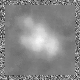

最小
最大
平均値
標準偏差
標準誤差
-65.0178
94.4699
4.85274
20.4635
0.255794
| オプション | 必須項目/選択項目 | 説明 | デフォルト |
|---|---|---|---|
| -i | 必須 | 入力ファイル設定 | NULL |
| -o | 必須 | 出力ファイル設定 | NULL |
| -sx | 選択 | 平滑化フィルタのｘ軸を指定 | 3 |
| -sy | 選択 | 平滑化フィルタのｙ軸を指定 | 3 |
| -sz | 選択 | 平滑化フィルタのｚ軸を指定 | 3 |
| -r | 選択 | 平滑化フィルタの半径を指定 | 1 |
| -m | 選択 | モード１を設定 | 0 |
| -M | 選択 | モード２を設定 | 0 |
| -h | 選択 | ヘルプを表示 |
| モード | 説明 |
|---|---|
| 1 | メディアンフィルタ |
| 2 | 平均値フィルタ |
| 3 | サーフェイスフィットフィルタ |
| モード | 説明 |
|---|---|
| 0 | 平滑化フィルタを四角とする ※オプションの-sx,-syを設定すること |
| 1 | 平滑化フィルタを円とする モード１で１を選択したときのみ実行可 ※オプションの-rを設定すること |
|
最小 |
-65.0178 |
| モード１：1 | ||||||
最小 |
-41.8721 |
モード２：0を選択 -sx=9,-sy=9に変更 −−−−−−＞ |
最小 |
-54.6403 |
||
| モード２：1を選択 -r=5に変更 −−−−−−＞ |
 | 最小 |
-54.6403 |
|||
| モード１：2 | ||||||
最小 |
-41.8721 |
モード２：0を選択 -sx=9,-sy=9に変更 −−−−−−＞ |
最小 |
-54.6403 |
||
| モード１：3 | ||||||
最小 |
-41.8721 |
モード２：0を選択 -sx=9,-sy=9に変更 −−−−−−＞ |
最小 |
-54.6403 |